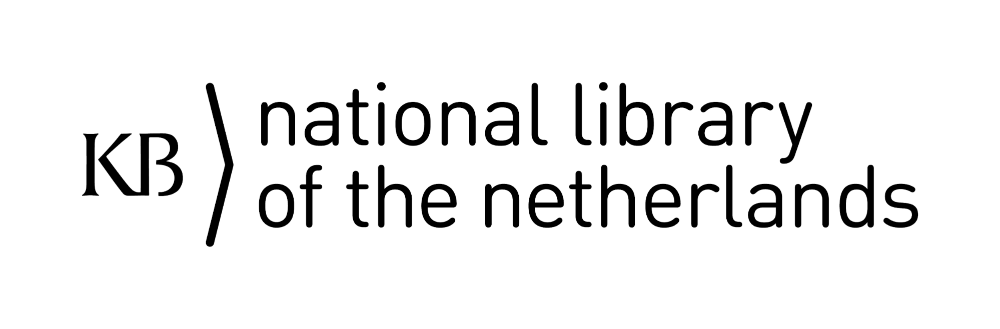

The DH2019 Library and DH-SIG pre-conference takes place in the KB national library of the Netherlands in the Hague.

The KB is a research library with a broad collection in the fields of Dutch history, culture and society. As a national library we aim to collect and store all (digital) publications that appear in the Netherlands, as well as a part of the international publications about the Netherlands.
The KB has planned to have digitised and OCRed its entire collection of books, periodicals and newspapers from 1470 onward by the year 2030. Over 70 million book, newspaper and magazine pages are currently available via the search portal delpher.nl and dbnl.org, but we also offer born digital collections, such as our web archive, which contains 33 TB of data and consist of more than 13.000 websites. In 2013, the KB has set up the KB Lab for experiments with the digital collection within the digital humanities: lab.kb.nl
The local organisers are happy to accommodate all participants by arranging transportation from Utrecht to the Hague by bus. This is included in the registration costs. More information about the schedule and exact location will be published on this website.
The library is situated next to the central train station in the Hague. Should you prefer to arrange your own travel, please see https://www.kb.nl/en/visitors/address-and-directions for directions. For the train schedule and how to purchase train tickets please see https://www.ns.nl/en.
For questions regarding the programme, please contact Sarah Potvin (spotvin[at]library.tamu.edu)
For questions regarding the local organization, please contact Lotte Wilms (lotte.wilms[at]kb.nl)